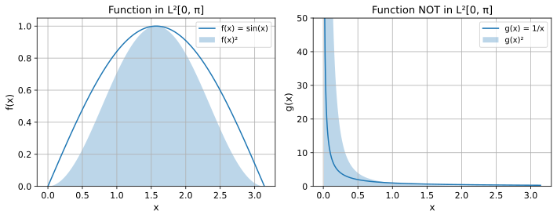
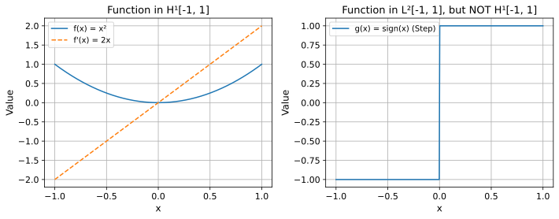

In FEM, we transform strong forms of PDEs (like \(\nabla\cdot(k\nabla u)=f\)) into weak forms using integration by parts. Weak forms look like: Find \(u\) such that
\[
\int_{\Omega}(k\nabla u \cdot \nabla v\,d\Omega) = \int_{\Omega}fv \,d\Omega
\]
for all suitable “test functions” \(v\).
This involves integrals of functions and their derivatives. What kind of functions \(u\) and \(v\) can we “legally” plug into these integrals? Do they need to be smooth? Can they have kinks?
4.3 From Vectors to Functions
You know vector spaces like \(\mathbb{R}^3\): vectors, addition, scalar multiplication. We measure vector “size” (norm) using the dot product:
Functions can also form vector spaces! We can add functions (\(f+g\)) and scale them (\(cf\)). The challenge is defining a “dot product” and “size” (norm) for functions, and ensuring our space is “complete” (no missing limits).
4.4 Hilbert Spaces: The General Framework
A Hilbert Space is a vector space (often of functions) with an inner product\(\langle f,g \rangle\). The inner product lets us define:
Orthogonality:\(f\) is orthogonal to \(g\) if \(\langle f,g \rangle = 0\)
Crucially, Hilbert spaces are complete: every Cauchy sequence converges to a point within the space. This is vital for proving solution existence and convergence of approximations like FEM.
4.5\(L^2(\Omega)\): Square-Integrable Functions
The most common Hilbert space in introductory FEM.
\(L^2(\Omega)\) is the space of functions \(f\) defined on a domain \(\Omega\) whose square has a finite integral:
\[\int_{\Omega} |f(x)|^2 \,dx < \infty\]
Think: functions with finite “energy” or finite mean-square value.
\(L^2(\Omega)\) is a Hilbert space, also sometimes called \(H^0(\Omega)\).
4.5.1 Examples
Code
```{python}#| code-fold: true#| fig-cap: "Left: sin(x) is in L²[0, π]. Right: 1/x is NOT in L²[0, π] as its square diverges near x=0."#| output: truex1 = np.linspace(0.01, np.pi, 400)x2 = np.linspace(0, np.pi, 400)f1 = np.sin(x2)f2 =1/ x1fig, axs = plt.subplots(1, 2, figsize=(10, 4))axs[0].plot(x2, f1, label='f(x) = sin(x)')axs[0].fill_between(x2, f1**2, alpha=0.3, label='f(x)²')axs[0].set_title('Function in L²[0, π]')axs[0].set_xlabel('x')axs[0].set_ylabel('f(x)')axs[0].legend()axs[0].grid(True)axs[0].set_ylim(bottom=0)axs[1].plot(x1, f2, label='g(x) = 1/x')axs[1].fill_between(x1, f2**2, alpha=0.3, label='g(x)²')axs[1].set_title('Function NOT in L²[0, π]')axs[1].set_xlabel('x')axs[1].set_ylabel('g(x)')axs[1].legend()axs[1].grid(True)axs[1].set_ylim(0, 50)plt.tight_layout()plt.show()```

Left: sin(x) is in L²[0, π]. Right: 1/x is NOT in L²[0, π] as its square diverges near x=0.
Note
Functions can be unbounded (like \(1/\sqrt{x}\) near 0 on \([0,1]\)) and still be in \(L^2\). Functions can also be discontinuous and be in \(L^2\).
4.6 Need for Derivatives: Sobolev Spaces
Our weak form involves derivatives \(\nabla u \cdot \nabla v\). Requiring functions \(u, v\) to be only in \(L^2(\Omega)\) is not enough — we need their derivatives to also be square-integrable.
NoteProblem
What if \(u\) is continuous but has a kink (like \(|x|\))? Its classical derivative isn’t defined everywhere or might not be in \(L^2\).
4.7 Sobolev Space \(H^1(\Omega)\)
\(H^1(\Omega)\) is the simplest Sobolev space relevant to many FEM problems.
NoteDefinition
\(H^1(\Omega)\) is the space of functions \(f\) such that both \(f\) and its first weak derivatives are in \(L^2(\Omega)\):
\[H^1(\Omega) = \{ f \in L^2(\Omega) \mid \nabla f \in L^2(\Omega) \}\]
A weak derivative is a generalization of the derivative using integration by parts. It allows functions with “corners” (like \(|x|\)) to still have a derivative within this framework, provided it’s an \(L^2\) function.
\(H^1(\Omega)\) is also a Hilbert space.
4.7.1\(H^1\) Inner Product and Norm
Inner Product: Includes terms for both the function and its derivative:
If \(\|f\|_{H^1}\) is finite, the function is “well-behaved enough” for typical second-order PDE weak forms.
4.7.2\(H^1\) vs \(L^2\): Examples
Code
```{python}#| code-fold: true#| fig-cap: "Left: x² is smooth, both function and derivative (2x) are in L², so x² ∈ H¹. Right: Step function is in L², but its derivative (a Dirac delta) is not in L², so Step ∉ H¹."#| output: truex = np.linspace(-1, 1, 400)f1 = x**2f1_deriv =2*xf2 = np.sign(x)fig, axs = plt.subplots(1, 2, figsize=(10, 4))axs[0].plot(x, f1, label='f(x) = x²')axs[0].plot(x, f1_deriv, label="f'(x) = 2x", linestyle='--')axs[0].set_title('Function in H¹[-1, 1]')axs[0].set_xlabel('x')axs[0].set_ylabel('Value')axs[0].legend()axs[0].grid(True)axs[1].plot(x, f2, label='g(x) = sign(x) (Step)')axs[1].set_title('Function in L²[-1, 1], but NOT H¹[-1, 1]')axs[1].set_xlabel('x')axs[1].set_ylabel('Value')axs[1].legend()axs[1].grid(True)plt.tight_layout()plt.show()```

Left: x² is smooth, both function and derivative (2x) are in L², so x² ∈ H¹. Right: Step function is in L², but its derivative (a Dirac delta) is not in L², so Step ∉ H¹.
Key observations:
Smooth functions (like polynomials) are typically in \(H^1\)
Functions with “jumps” (like the step function) are often in \(L^2\) but not \(H^1\)
Functions with “kinks” (like \(|x|\)) can be in \(H^1\) because their weak derivative \(\text{sign}(x)\) exists and is in \(L^2\)
4.8 Summary
Weak Formulations: FEM relies on integral (weak) forms of PDEs
\(L^2\) (\(H^0\)): Guarantees that integrals of functions themselves (\(\int fv\,dx\)) make sense. Useful for source terms, mass matrices
\(H^1\): Guarantees that integrals involving first derivatives (\(\int \nabla f \cdot \nabla v\,dx\)) also make sense. The natural solution space for many second-order problems (heat, elasticity, potential flow). Ensures stiffness matrices are well-defined
Using these spaces provides a rigorous mathematical foundation for FEM, ensuring solutions exist and approximations converge
4.9 Beyond \(H^1\)
Higher-order Sobolev spaces exist, like \(H^k(\Omega)\), which include functions with weak derivatives up to order \(k\). Specific spaces such as \(H(\text{div})\) and \(H(\text{curl})\) are useful for vector fields in fluid dynamics and electromagnetics.
Source Code
---title: "Function Spaces"subtitle: "Hilbert, L², and Sobolev Spaces"---::: {.content-visible when-format="html"}::: {.callout-tip}## Companion notebooksWork through these hands-on notebooks alongside this chapter:- [01 – Strong to Weak Form](notebooks/01_strong_to_weak_form.html)::::::## Setup```{python}#| include: false%run _common.py```## Motivation: Why Special Function Spaces?In FEM, we transform strong forms of PDEs (like $\nabla\cdot(k\nabla u)=f$) into **weak forms** using integration by parts. Weak forms look like: Find $u$ such that$$\int_{\Omega}(k\nabla u \cdot \nabla v\,d\Omega) = \int_{\Omega}fv \,d\Omega$$for all suitable "test functions" $v$.This involves integrals of functions and their derivatives. **What kind of functions $u$ and $v$ can we "legally" plug into these integrals?** Do they need to be smooth? Can they have kinks?## From Vectors to FunctionsYou know **vector spaces** like $\mathbb{R}^3$: vectors, addition, scalar multiplication. We measure vector "size" (norm) using the dot product:$$\|x\|^2 = x_1^2 + x_2^2 + x_3^2 = x \cdot x, \qquad \|x\| = \sqrt{x \cdot x}$$Functions can also form vector spaces! We can add functions ($f+g$) and scale them ($cf$). The challenge is defining a "dot product" and "size" (norm) for functions, and ensuring our space is "complete" (no missing limits).## Hilbert Spaces: The General FrameworkA **Hilbert Space** is a vector space (often of functions) with an **inner product** $\langle f,g \rangle$. The inner product lets us define:- **Norm (Size):** $\|f\| = \sqrt{\langle f,f \rangle}$- **Orthogonality:** $f$ is orthogonal to $g$ if $\langle f,g \rangle = 0$Crucially, Hilbert spaces are **complete**: every Cauchy sequence converges to a point *within* the space. This is vital for proving solution existence and convergence of approximations like FEM.## $L^2(\Omega)$: Square-Integrable FunctionsThe most common Hilbert space in introductory FEM.$L^2(\Omega)$ is the space of functions $f$ defined on a domain $\Omega$ whose square has a finite integral:$$\int_{\Omega} |f(x)|^2 \,dx < \infty$$Think: functions with finite "energy" or finite mean-square value.**Inner Product:**$$\langle f, g\rangle_{L^2} = \int_{\Omega} f(x) g(x) \,dx$$**Norm ($L^2$ Norm):**$$\|f\|_{L^2} = \sqrt{\int_{\Omega} |f(x)|^2 \,dx}$$$L^2(\Omega)$ is a Hilbert space, also sometimes called $H^0(\Omega)$.### Examples```{python}#| code-fold: true#| echo: fenced#| fig-cap: "Left: sin(x) is in L²[0, π]. Right: 1/x is NOT in L²[0, π] as its square diverges near x=0."#| output: truex1 = np.linspace(0.01, np.pi, 400)x2 = np.linspace(0, np.pi, 400)f1 = np.sin(x2)f2 =1/ x1fig, axs = plt.subplots(1, 2, figsize=(10, 4))axs[0].plot(x2, f1, label='f(x) = sin(x)')axs[0].fill_between(x2, f1**2, alpha=0.3, label='f(x)²')axs[0].set_title('Function in L²[0, π]')axs[0].set_xlabel('x')axs[0].set_ylabel('f(x)')axs[0].legend()axs[0].grid(True)axs[0].set_ylim(bottom=0)axs[1].plot(x1, f2, label='g(x) = 1/x')axs[1].fill_between(x1, f2**2, alpha=0.3, label='g(x)²')axs[1].set_title('Function NOT in L²[0, π]')axs[1].set_xlabel('x')axs[1].set_ylabel('g(x)')axs[1].legend()axs[1].grid(True)axs[1].set_ylim(0, 50)plt.tight_layout()plt.show()```::: {.callout-note}Functions can be unbounded (like $1/\sqrt{x}$ near 0 on $[0,1]$) and still be in $L^2$. Functions can also be discontinuous and be in $L^2$.:::## Need for Derivatives: Sobolev SpacesOur weak form involves derivatives $\nabla u \cdot \nabla v$. Requiring functions $u, v$ to be only in $L^2(\Omega)$ is not enough — we need their derivatives to also be square-integrable.::: {.callout-note title="Problem"}What if $u$ is continuous but has a kink (like $|x|$)? Its classical derivative isn't defined everywhere or might not be in $L^2$.:::## Sobolev Space $H^1(\Omega)$$H^1(\Omega)$ is the simplest Sobolev space relevant to many FEM problems.::: {.callout-note title="Definition"}$H^1(\Omega)$ is the space of functions $f$ such that both $f$ and its first weak derivatives are in $L^2(\Omega)$:$$H^1(\Omega) = \{ f \in L^2(\Omega) \mid \nabla f \in L^2(\Omega) \}$$A **weak derivative** is a generalization of the derivative using integration by parts. It allows functions with "corners" (like $|x|$) to still have a derivative within this framework, provided it's an $L^2$ function.$H^1(\Omega)$ is also a Hilbert space.:::### $H^1$ Inner Product and Norm**Inner Product:** Includes terms for both the function and its derivative:$$\langle f, g\rangle_{H^1} = \int_{\Omega} f(x) g(x) \,dx + \int_{\Omega} \nabla f(x) \cdot \nabla g(x) \,dx$$**Norm ($H^1$ Norm):**$$\|f\|_{H^1}^2 = \|f\|_{L^2}^2 + \|\nabla f\|_{L^2}^2$$If $\|f\|_{H^1}$ is finite, the function is "well-behaved enough" for typical second-order PDE weak forms.### $H^1$ vs $L^2$: Examples```{python}#| code-fold: true#| echo: fenced#| fig-cap: "Left: x² is smooth, both function and derivative (2x) are in L², so x² ∈ H¹. Right: Step function is in L², but its derivative (a Dirac delta) is not in L², so Step ∉ H¹."#| output: truex = np.linspace(-1, 1, 400)f1 = x**2f1_deriv =2*xf2 = np.sign(x)fig, axs = plt.subplots(1, 2, figsize=(10, 4))axs[0].plot(x, f1, label='f(x) = x²')axs[0].plot(x, f1_deriv, label="f'(x) = 2x", linestyle='--')axs[0].set_title('Function in H¹[-1, 1]')axs[0].set_xlabel('x')axs[0].set_ylabel('Value')axs[0].legend()axs[0].grid(True)axs[1].plot(x, f2, label='g(x) = sign(x) (Step)')axs[1].set_title('Function in L²[-1, 1], but NOT H¹[-1, 1]')axs[1].set_xlabel('x')axs[1].set_ylabel('Value')axs[1].legend()axs[1].grid(True)plt.tight_layout()plt.show()```Key observations:- Smooth functions (like polynomials) are typically in $H^1$- Functions with "jumps" (like the step function) are often in $L^2$ but not $H^1$- Functions with "kinks" (like $|x|$) can be in $H^1$ because their weak derivative $\text{sign}(x)$ exists and is in $L^2$## Summary- **Weak Formulations**: FEM relies on integral (weak) forms of PDEs- **$L^2$ ($H^0$)**: Guarantees that integrals of functions themselves ($\int fv\,dx$) make sense. Useful for source terms, mass matrices- **$H^1$**: Guarantees that integrals involving first derivatives ($\int \nabla f \cdot \nabla v\,dx$) also make sense. The natural solution space for many second-order problems (heat, elasticity, potential flow). Ensures stiffness matrices are well-defined- Using these spaces provides a rigorous mathematical foundation for FEM, ensuring solutions exist and approximations converge## Beyond $H^1$Higher-order Sobolev spaces exist, like $H^k(\Omega)$, which include functions with weak derivatives up to order $k$. Specific spaces such as $H(\text{div})$ and $H(\text{curl})$ are useful for vector fields in fluid dynamics and electromagnetics.